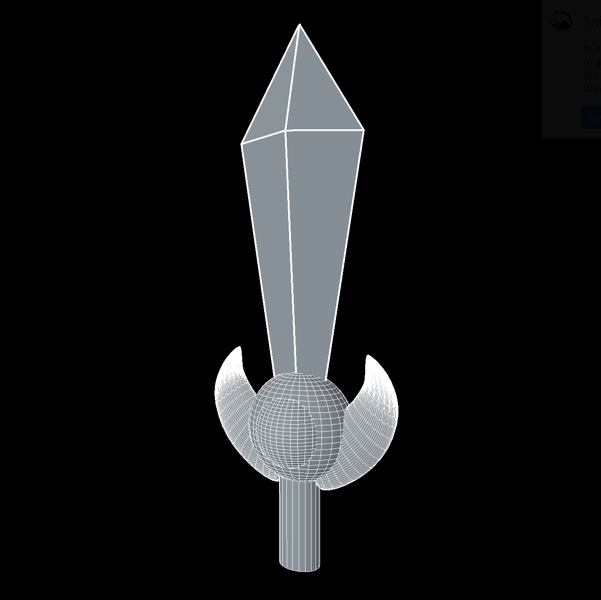
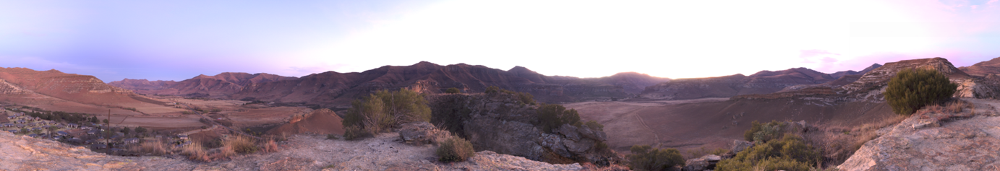
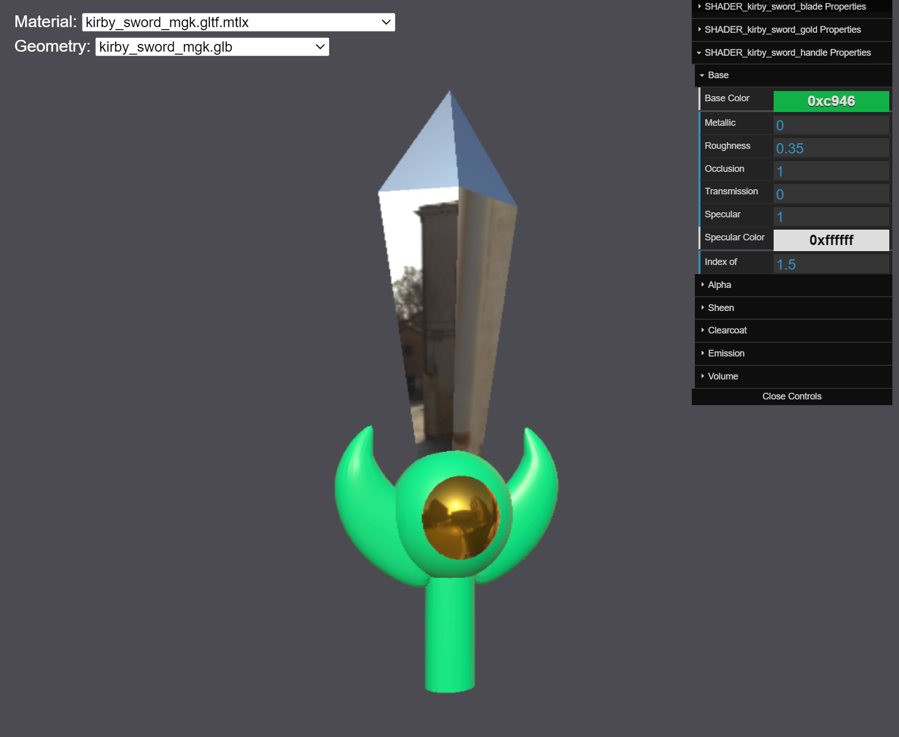
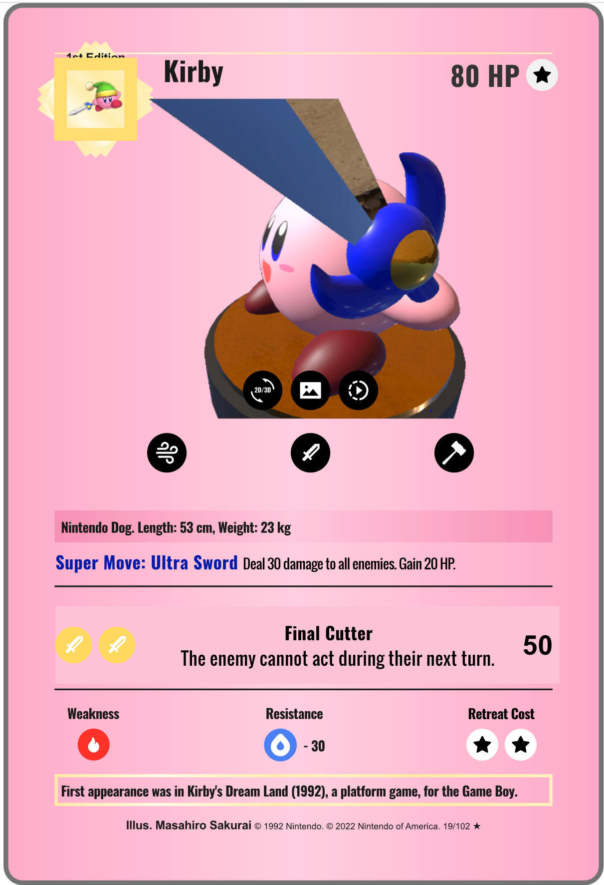

Figure 2: Material setup in Blender.
The sword asset was inspired by game illustrations of the classic sword ability first introduced in 1993 for Kirby’s Adventure.
The base model was created in Maya.
3D geometry was created based on reference illustrations which were loaded in as 2D image planes.
The sword is comprised of three separate objects: a blade, a hilt and a “jewel” in the hilt.

Figure 1: Final geometry built in Maya.
The geometry was then exported out as an "obj" file.
Blender was used to create and apply materials to the various parts of the sword. For each material various parameters such as metallic, color, roughness, specular etc were modified as desired. For example the blade was set to be 100 percent metallic.
Figure 2: Material setup in Blender.
To preview lighting, a stock IBL / environment was loaded in.

To deploy geometry and materials for the Web, the sword was exported out to a "glTF" file from within Blender.
Materials and material assignments were extracted using a custom utility to create MaterialX materials.
For previewing materials the MaterialXView (deskop or web) sample program was used. The same environment used in Blender was used in these viewers.
The final materials can be found in the asset library

|  |
Adjustments could be made directly to the material files as necessary or modified in Blender and re-exported and translated.
Once satisfied with the sword, the geometry (glTF) and materials (MaterialX) files were deployed. In this case, the sword was used for the 3D rendering for the digital card viewer project.

Figure 4: Snapshot from 3D view on digital card Web page.